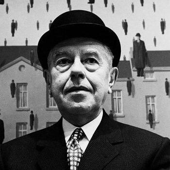
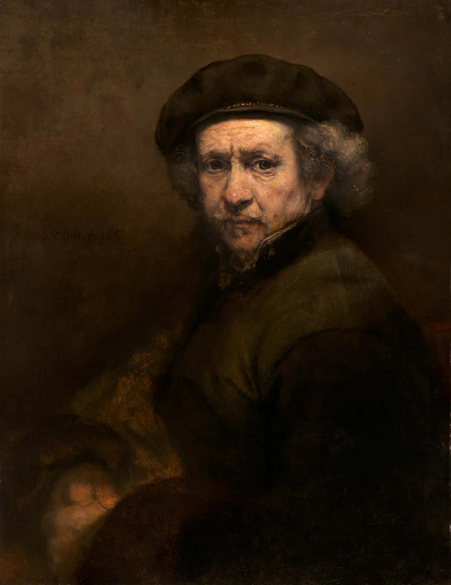

René Magritte
"René Magritte" A Belgian surrealist artist known for his depictions of familiar objects in unfamiliar, unexpected contexts, which often provoked questions about the nature and boundaries of reality and representation. His imagery has influenced pop art, minimalist art, and conceptual art.

Vincent van Gogh
"Vincent van Gogh" 30 March 1853 – 29 July 1890 was a Dutch Post-Impressionist painter who is among the most famous and influential figures in the history of Western art. In just over a decade, he created approximately 2,100 artworks, including around 860 oil paintings, most of them in the last two years of his life. His oeuvre includes landscapes, still lifes, portraits, and self-portraits, most of which are characterised by bold colours and dramatic brushwork that contributed to the rise of expressionism in modern art.

Edvard Munch
"Edvard Munch Edvard Munch is a Norwegian born expressionist painter. His best-known work, The Scream, has become one of the most iconic images of world art. In the late 20th century, he played a great role in German expressionism and the art form that later followed; namely because of the strong mental anguish that was displayed in many of the pieces that he created.